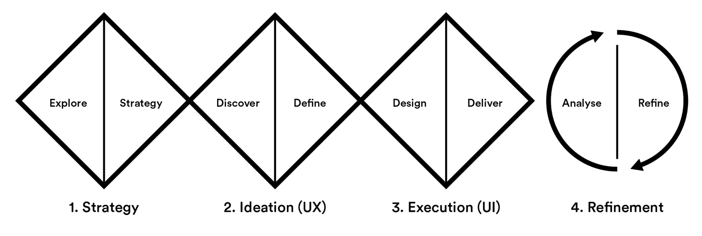

The process outlined in this document is a slight modification of well known Design Thinking method, using 3 diamonds for divergance and convergance creation and a cyclical refinement circle.
The UX process can start on any of the 4 sections, but the results will be improved by starting on the earliest possible section.
Starting from scratch? Developing a UX strategy helps create a strong base for ideation and alignment within the team. Visit the Strategy section
Have a direction already? Doing a wide range of divergent and convergent ideation will help find the best idea to fit the user’s needs. Visit the Ideation section
Have a good idea already? Desiging the idea correct - clear design and delivery documentation will flesh out all the details of the chosen idea. Visit the Execution section
Already have a launched product or service? Thorough analysis and refinement can help improve a product and better align it to the user’s needs. Visit the Refinement section